Рабочее пространство
выполнения
проекта
Организуем выполнение уже принятого плана: показываем работу на доске и во времени, сохраняем материалы, фиксируем решение и готовим результат к проверке.
- Где работаем
- Существующий проект «СЕВЕР»
- Основание
- План темы 4 и запуск темы 5
- Главный результат
- Рабочее пространство одного фрагмента плана
Задача, доска, этапы и роли.
Календарь, план и документ.
Обсуждение, решение и трассировка.
01Продолжаем уже принятый план
В теме 4 команда разбила работу на А, А1, А2, Б, В и Г. В лабораторной 5 появился клиентский запрос и координационная задача запуска. Теперь план нужно превратить в рабочее пространство команды.
Каждое звено хранит разную информацию. CRM и требования объясняют причину работы. Задача назначает ответственность. Доска показывает текущее состояние. Календарь и план показывают время. Документ и комментарий сохраняют материалы и решение.
Исходные записи
- Откройте проект «СЕВЕР».
В меню выберите «Проекты», найдите существующий проект и откройте его задачи.
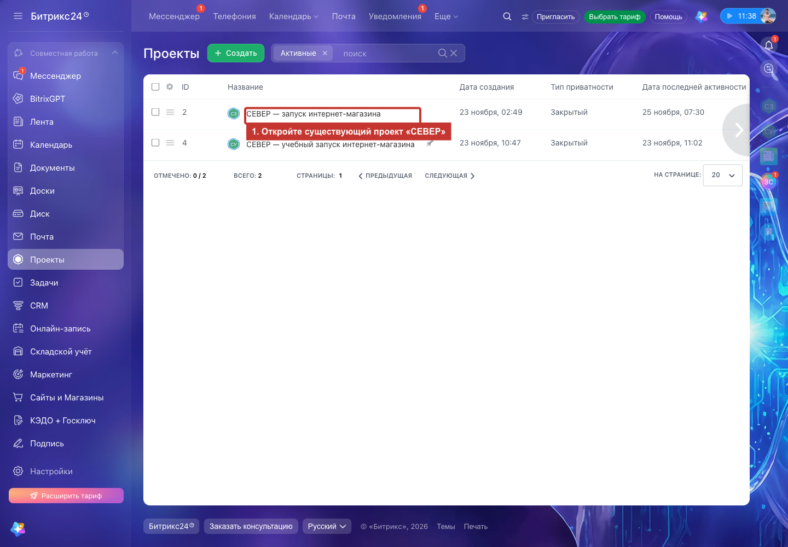
Что на кадре: в списке проектов выделен существующий «СЕВЕР». - Найдите план темы 4.
В списке задач проверьте общую задачу А, подзадачи А1 и А2, а также Б, В и Г. Они уже являются входными данными лабораторной.
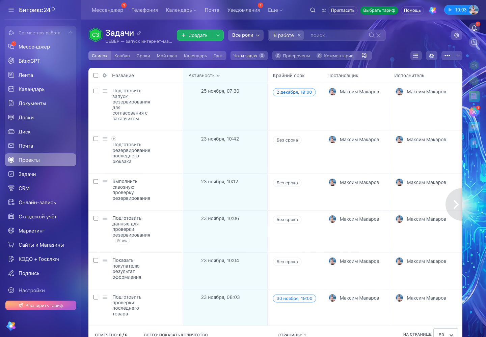
Что на кадре: список существующих задач проекта; работа В видна среди записей, созданных в теме 4. - Выберите рабочий фрагмент.
Для этой лабораторной используйте работу В «Подготовить данные для проверки резервирования» и её чек-лист. Она связывает входные данные с будущим сквозным прогоном Г.
02Выбираем одну работу команды
Рабочее пространство не заменяет весь план. Оно помогает команде вести один выбранный фрагмент так, чтобы было видно состояние, ответственного и следующий шаг.
В · Подготовить данные для проверки резервирования
Делаем
- Откройте карточку В.
Нажмите название задачи в списке проекта. Проверьте название, описание, исполнителя и чек-лист. Не изменяйте пункты чек-листа: в теме 4 они уже описали подготовку независимых прогонов.
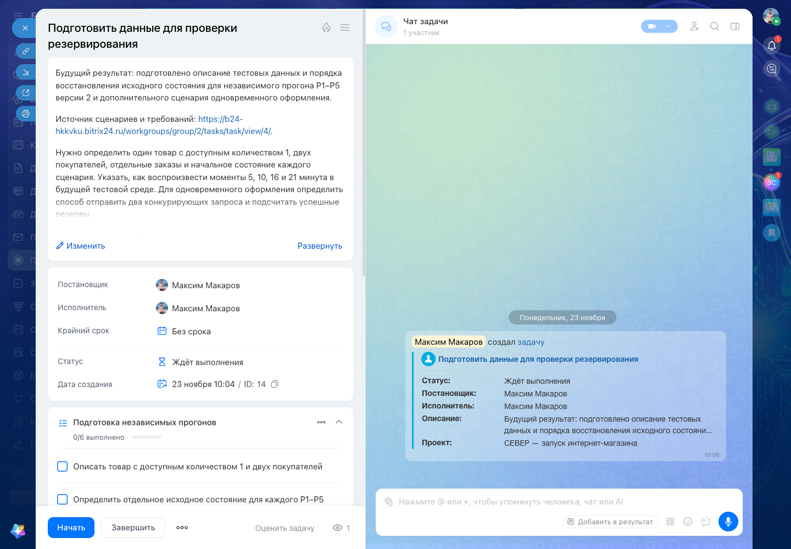
Что на кадре: открыта задача В; описание связывает подготовку данных с P1–P5 и будущим прогоном. - Зафиксируйте роли.
В индивидуальной работе назначьте себя исполнителем. В описании или документе подпишите отдельно, кто выполняет функции координатора, аналитика, проверяющего и заказчика. В командной работе используйте поля исполнителя, соисполнителей и наблюдателей.
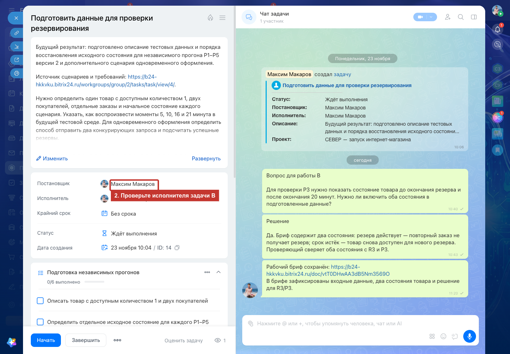
Что на кадре: в карточке задачи В виден назначенный исполнитель. - Проверьте сохранение.
Обновите страницу. Роль должна быть видна в карточке задачи или в связанном документе.
03Показываем состояние работы на доске
Список задач отвечает на вопрос «какие записи есть». Представление «Канбан» отвечает на вопрос «на каком этапе находится выбранная работа». Его колонки не являются новыми задачами и не заменяют карточки темы 4. Ниже показаны четыре состояния, которые команда различает в работе; названия фактических колонок портала могут отличаться.
Подготовка
Команда собирает входные данные, требования и материалы.
В работе
Исполнитель готовит результат выбранной задачи.
На проверке
Проверяющий сопоставляет результат с P1–P5.
Готово к передаче
Материалы и решение собраны для следующего этапа проекта.
Делаем
- Откройте «Канбан» в задачах проекта.
Вернитесь к списку задач «СЕВЕР» и нажмите вкладку «Канбан». Это представление показывает существующие задачи карточками по этапам.

Что на кадре: вкладка «Канбан» рядом со списком задач проекта. - Проверьте карточку В на доске.
Найдите «Подготовить данные для проверки резервирования». Карточка должна остаться в фактическом этапе. Не переносите её в «Сделаны»: лабораторная не создаёт фактический результат работы.

Что на кадре: существующие задачи проекта показаны карточками в этапах канбана. - Зафиксируйте, что показывает канбан.
В отчёте укажите название этапа карточки В и её назначение: представление показывает состояние уже созданной задачи, а не заменяет план темы 4.
04Проверяем работу во времени
Календарь показывает место задачи во времени. План и Гант показывают сроки нескольких задач вместе. Эти представления нужны, чтобы увидеть пересечение и порядок работ до того, как команда начала выполнять задачу.
Делаем
- Откройте календарь.
В меню выберите «Календарь». Найдите представление задач или событий, связанное с проектом.
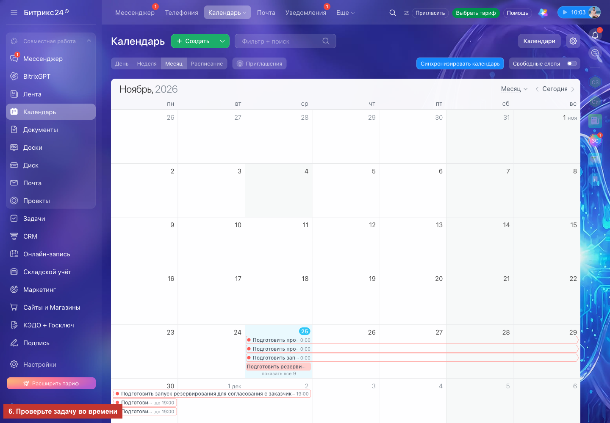
Что на кадре: открыт календарный раздел для проверки задачи во времени. - Проверьте задачу В.
Запишите, отображается ли она и виден ли её срок. Если задача не показана, не назначайте произвольную дату только ради кадра.

Что на кадре: календарь показывает задачи проекта со сроками; задача В без срока не появляется в календарной сетке. - Откройте «Гант» или «Планирование сроков» из задач проекта.
Проверьте, видны ли задачи А, А1, А2, Б, В и Г, сроки и порядок. Прямая ссылка с параметром адреса не заменяет нажатие в интерфейсе.

Что на кадре: вкладка «Гант» рядом с календарём в задачах проекта. 
Что на кадре: диаграмма Ганта открыта для существующих задач проекта. - Зафиксируйте результат проверки.
В документе укажите один из трёх результатов: представление открылось и показало задачу; представление открылось без задачи; функция недоступна.
05Сохраняем рабочие материалы
Задача хранит ответственность и состояние. Документ хранит материал, который проверяют и дополняют. Ссылка между ними не даёт обсуждению и файлам потеряться в разных разделах.
Бриф проверки резервирования — подготовка данных
Делаем
- Откройте «Документы».
В меню портала перейдите в раздел документов и найдите кнопку создания.
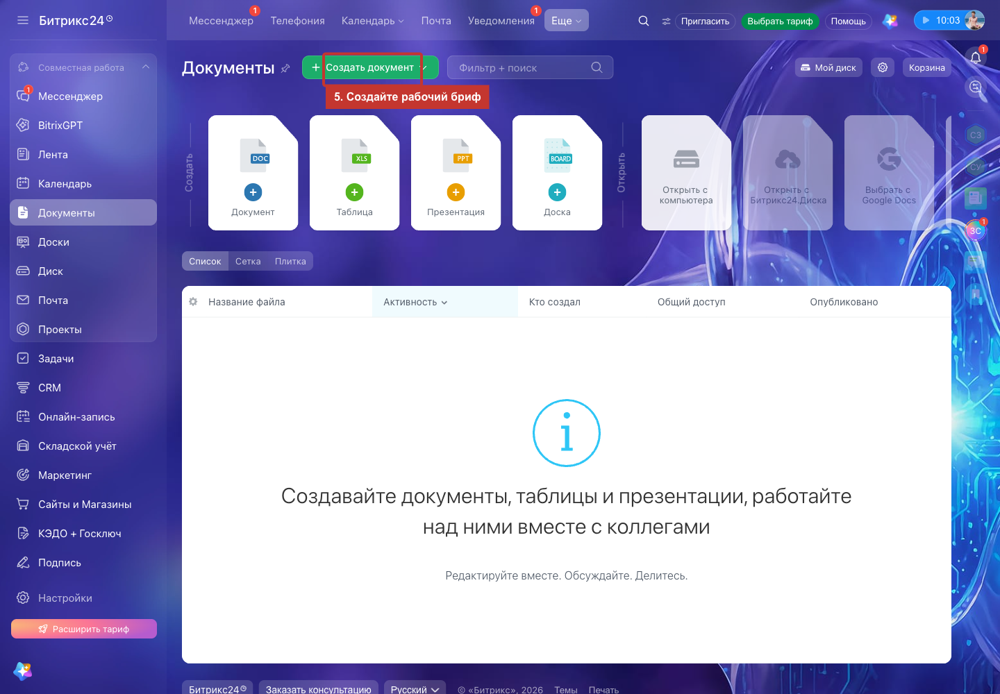
Что на кадре: открыт раздел документов для создания рабочего брифа. - Создайте документ.
Выберите доступный тип документа. Название: Бриф проверки резервирования — подготовка данных.
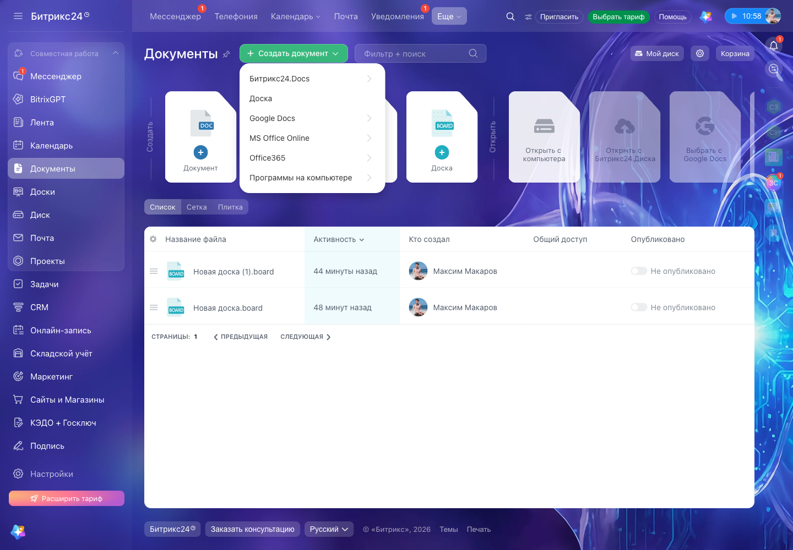
Что на кадре: в меню создания выбран тип «Документ». 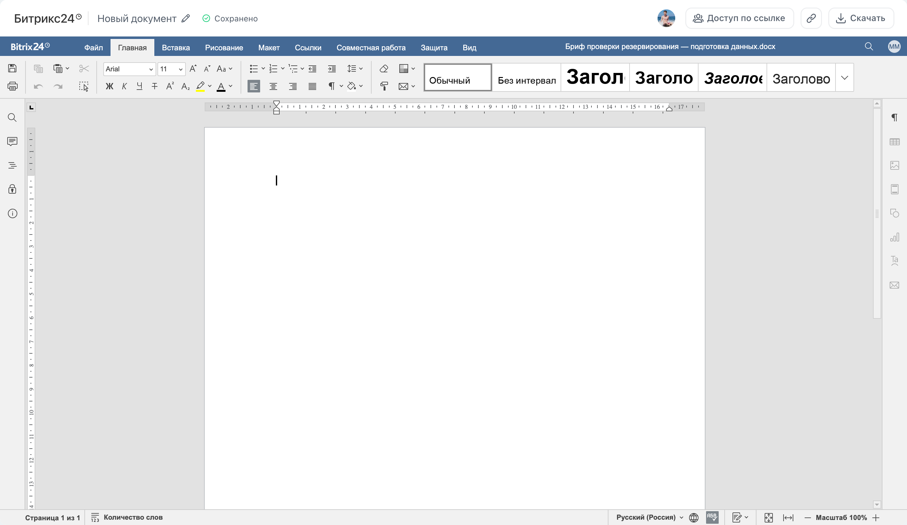
Что на кадре: в редакторе задано название рабочего брифа. - Заполните бриф.
Скопируйте текст выше. Замените квадратные скобки ссылками и ролями своей работы. Не добавляйте личные телефоны, почту и переписку.
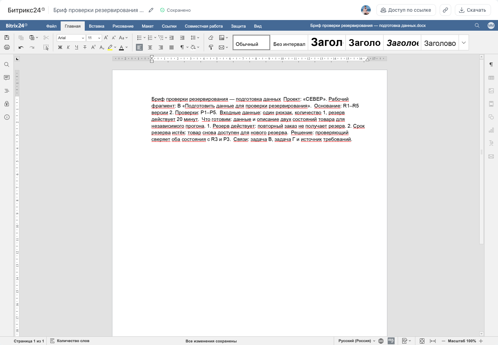
Что на кадре: полный текст брифа введён в редактор документа. - Сохраните и свяжите документ с задачей.
Скопируйте ссылку на документ. Вставьте её в описание задачи В или в её комментарий. После обновления убедитесь, что обе записи открываются.

Что на кадре: бриф повторно открыт со статусом «Сохранено». 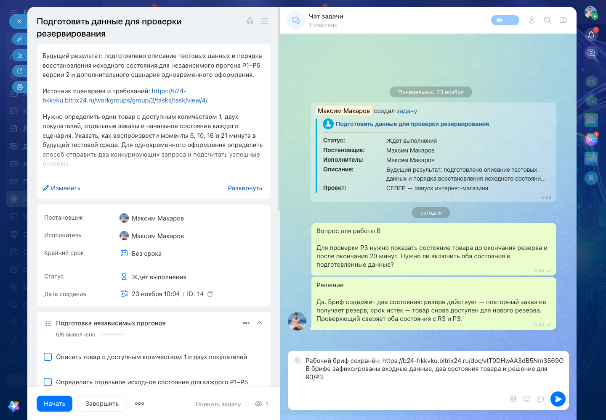
Что на кадре: ссылка на бриф введена в поле сообщения задачи В. 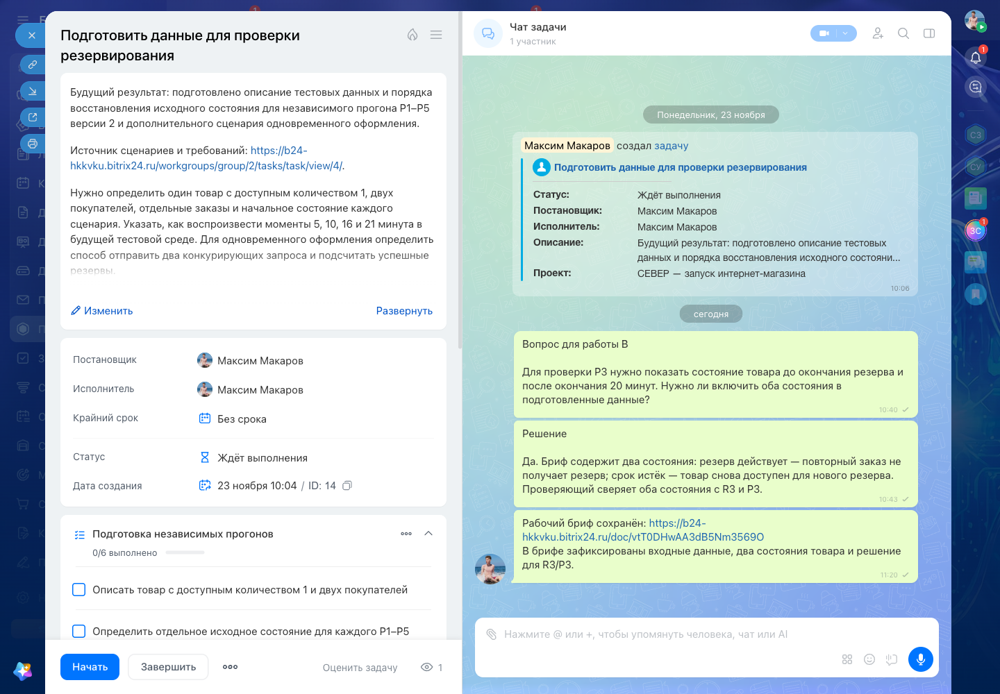
Что на кадре: после обновления ссылка на бриф сохранена в истории задачи В.
06Обсуждаем вопрос и сохраняем решение
Комментарий помогает обсудить вопрос с участниками. Решение должно остаться в описании задачи или документе: это место, которое проверяющий найдёт после завершения чата.
Делаем
- Откройте обсуждение задачи В.
В карточке задачи найдите поле комментария или чат задачи.

Что на кадре: поле сообщения в задаче В для рабочего вопроса. - Сохраните вопрос.
Вставьте блок «Вопрос для работы В». Отправьте сообщение и обновите страницу, чтобы проверить его сохранение.
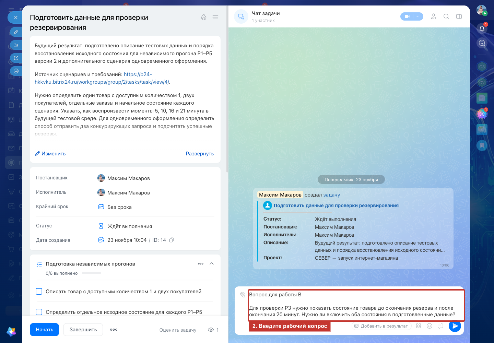
Что на кадре: рабочий вопрос введён до отправки. 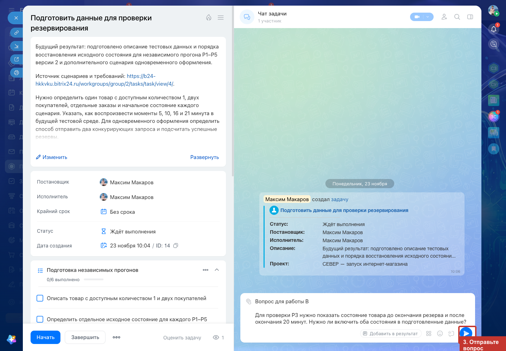
Что на кадре: кнопка отправки сообщения выделена перед сохранением вопроса. 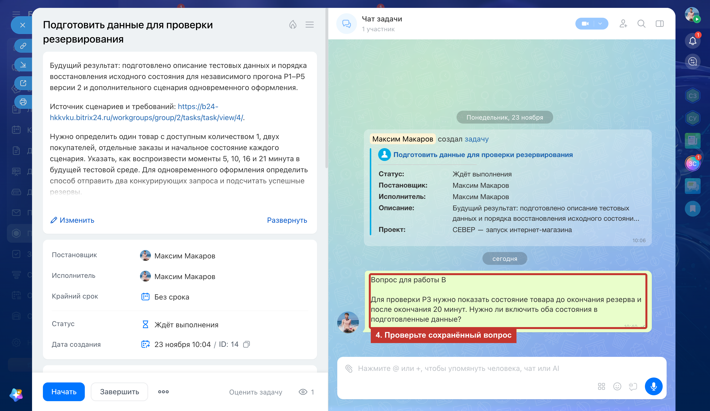
Что на кадре: после обновления вопрос остаётся в истории задачи. - Сохраните решение.
Добавьте блок «Решение». Затем перенесите тот же вывод в бриф или описание задачи. Не оставляйте принятое решение только в комментариях.
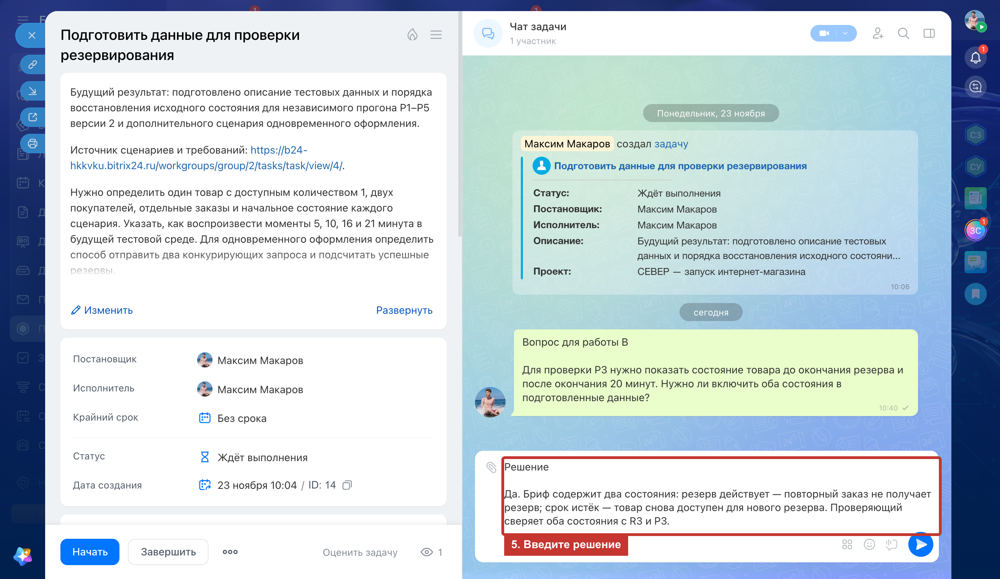
Что на кадре: решение введено отдельным сообщением. 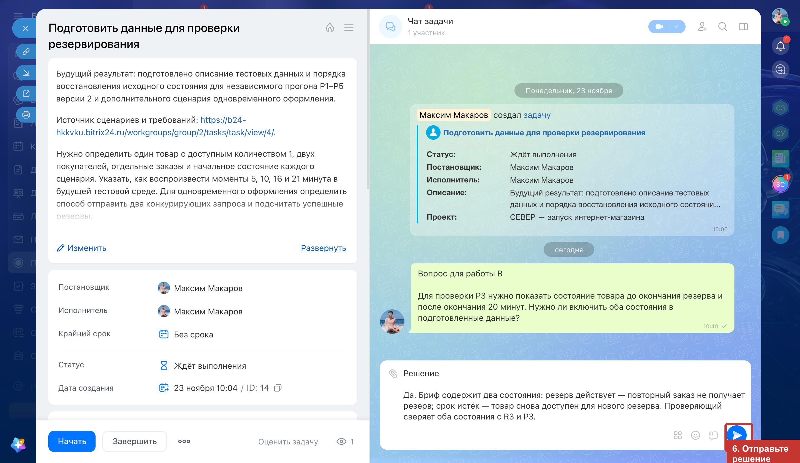
Что на кадре: перед отправкой решения выделена кнопка сообщения. 
Что на кадре: после обновления решение сохранено в истории задачи. - Проверьте устойчивую запись.
Откройте документ и найдите два состояния товара. Это место является источником для дальнейшей проверки.
Что на кадре: сохранённый бриф является устойчивой записью для решения и материалов.
07Собираем путь к проверке
Трассировка позволяет проверяющему восстановить причину каждой записи. Она не зависит от того, есть ли в тарифе нативные связи: если поля связи недоступны, используйте названия и ручные ссылки.
Делаем
- Откройте источник требований.
Перейдите к задаче с R1–R5 и P1–P5. Найдите R3 и P3 версии 2.
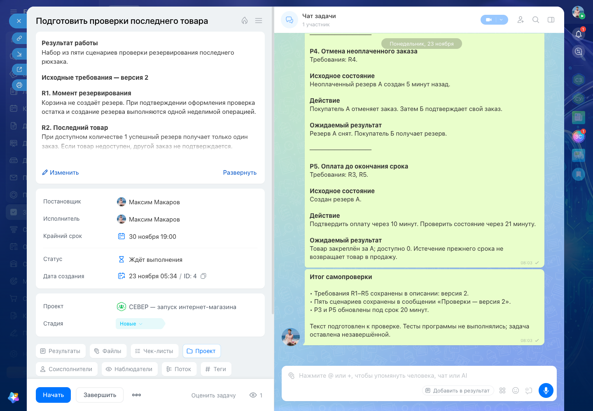
Что на кадре: задача источника требований содержит версии R1–R5 и сценарии P1–P5. - Проверьте ручные связи.
Из брифа должны открываться задача В, задача Г и источник требований. Из задачи В должна открываться ссылка на бриф.

Что на кадре: задача В описывает данные для P1–P5 и ссылается на источник требований. 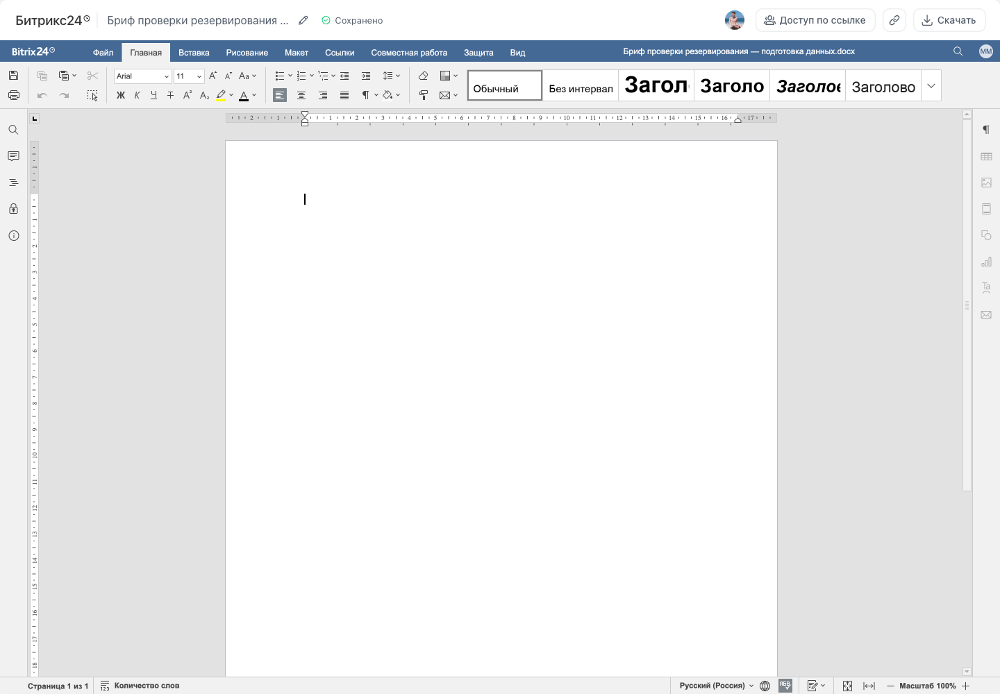
Что на кадре: сохранённый бриф открыт повторно как связанный рабочий материал. - Сформулируйте результат лабораторной.
Рабочее пространство подготовлено: задача выбрана, доска или её ограничение зафиксированы, материалы сохранены, решение перенесено в бриф, путь R3 → P3 → В → бриф → Г проверяем.
08Что предъявить
Сдача должна показывать одну связанную рабочую ситуацию, а не набор несвязанных экранов.
- Ссылка на существующий проект «СЕВЕР».
- Ссылка на задачу В и подтверждение, что задачи темы 4 не пересоздавались.
- Роли координатора, аналитика, исполнителя, проверяющего и заказчика.
- Кадр канбана с карточкой В и запись её фактического этапа либо честная фиксация недоступности представления.
- Проверка календаря и Ганта или плана.
- Рабочий бриф со ссылками на задачу В, задачу Г и требования.
- Сохранённый вопрос и решение в обсуждении задачи.
- Та же договорённость в брифе или описании задачи.
- Трассировка R3 → P3 → В → бриф → Г.
- Кадры каждого существенного действия: открыть, нажать, заполнить, сохранить и проверить.
- Краткая отметка о функциях, которые оказались недоступны или ограничены тарифом.
Проверяющий открывает задачу В, находит бриф, видит рабочее решение, переходит к R3 и P3, а затем понимает, какой материал подготовлен для задачи Г. Если ссылка закрыта, рядом укажите название сущности и её назначение.
Контрольные вопросы
- Чем доска отличается от плана работ темы 4?
- Почему решение нельзя хранить только в чате?
- Какая запись связывает задачу В с будущей проверкой Г?
- Что фиксируют, если календарь или Гант недоступны?
- Почему карточка на доске не доказывает готовность результата?
Частые ошибки
| Ошибка | Почему результат не принимается | Как исправить |
|---|---|---|
| Создан второй проект | Сквозная история «СЕВЕР» разорвана. | Использовать существующий проект и его задачи. |
| Созданы новые А, А1, А2, Б, В и Г | Повторён план темы 4. | Открыть существующие карточки и выбрать одну работу. |
| Карточка доски перенесена в «Готово» | Статус выдан за подтверждённый результат. | Оставить её на фактическом этапе и описать границы. |
| Решение есть только в чате | Его трудно найти при проверке. | Перенести решение в бриф или описание задачи. |
| Календарь заявлен доступным без кадра | Наличие пункта меню не подтверждает действие. | Сохранить реальный экран или отметку об ограничении. |
09Короткий словарь
- Рабочее пространство
- Связанный набор представлений, материалов и договорённостей для выполнения одной работы.Задача → доска → документ → решение
- Этап работы
- Текущее состояние работы на доске.Подготовка → в работе → проверка
- Бриф
- Документ с исходными данными, границами, ролями и ожидаемым результатом.Требования → материал → проверка
- Трассировка
- Связь требования, проверки, задачи, документа и следующей работы.R3 → P3 → В → бриф → Г
- Устойчивое решение
- Договорённость, сохранённая в задаче или документе, а не только в сообщении.Чат обсуждает; документ хранит
Ограничения интерфейса
- Доступность пункта меню не доказывает, что функция доступна на каждом тарифе.
- Если доска, календарь, Гант или документы не открываются, сохраните реальный экран ограничения и опишите ручной маршрут.
- Не используйте личные телефоны, email, секреты и личную переписку.
- Календарные даты на экране — состояние интерфейса, а не условия задания.